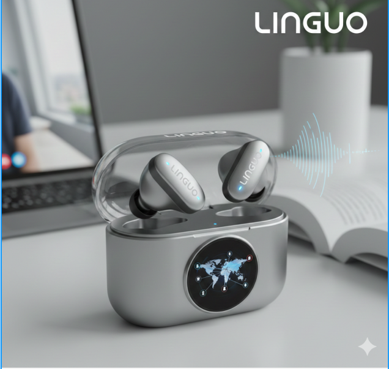
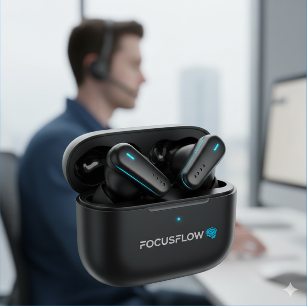

Inovação em Fones de Ouvido

Os fones Linguo são projetados para quem viaja frequentemente ou interage com pessoas de diferentes idiomas. Eles possuem uma tecnologia de tradução simultânea embutida, permitindo que você converse em tempo real com alguém que fala outro idioma.

Os FocusFlow são fones de ouvido projetados para melhorar o foco, a produtividade e o bem-estar mental. Usando uma combinação de tecnologia de cancelamento de ruído, áudio terapêutico e monitoramento biométrico, eles ajudam a melhorar seu desempenho cognitivo e reduzir o estresse.